Visualizing BERT
This page hosts a Jupyter Notebook for creating several visualizations using BERT, including vocabulary embeddings, position embeddings, and contextualized embeddings given a file with sentences containing a given word. For the example visualizations on this page, we're using BERT-large-uncased with whole word masking.
The notebook uses
HuggingFace transformers,
t-SNE in sklearn, and
adjustText.
Downloads:
First, let's visualize the vocabulary embeddings:
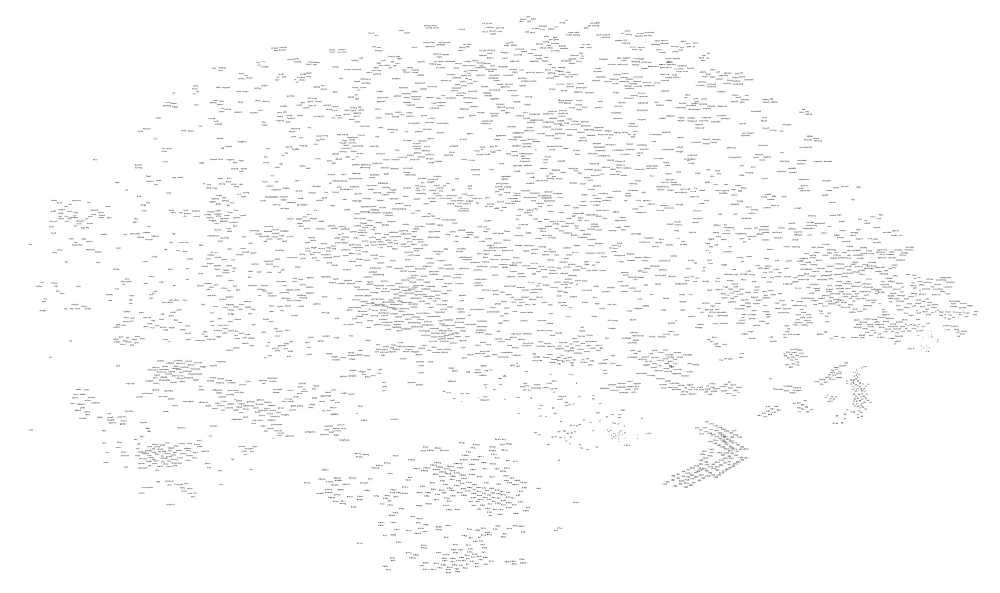
This looks pretty similar to typical
word embedding visualizations. Zooming in on the upper part shows us some clusters of verbs that have similar meanings:
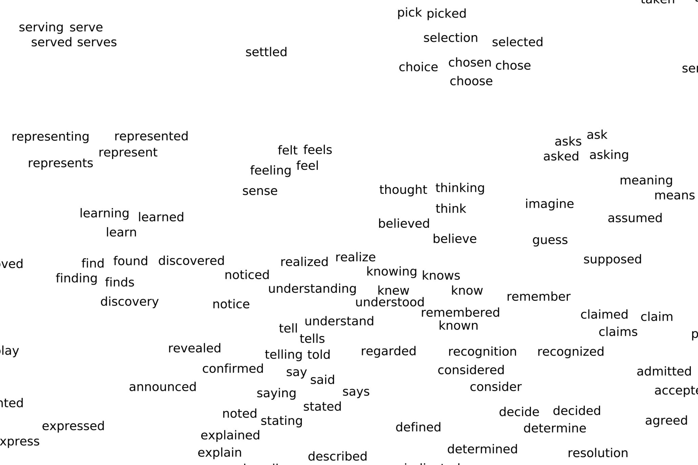
One difference compared to earlier word embeddings is the presense of partial-word units (those starting with ##). These are mostly in the lower part of the visualization, largely separated from the rest. Below we see clusters of common suffixes of English words:
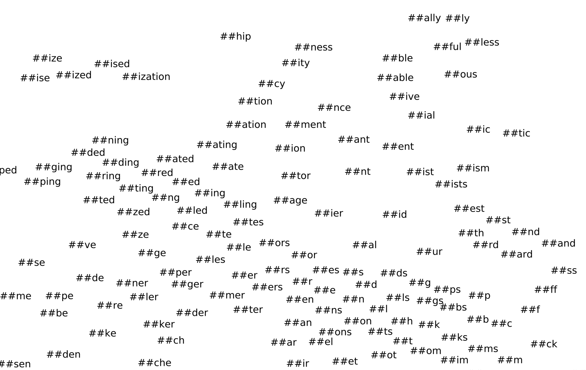
And, a bit to the left, common suffixes of named entities:
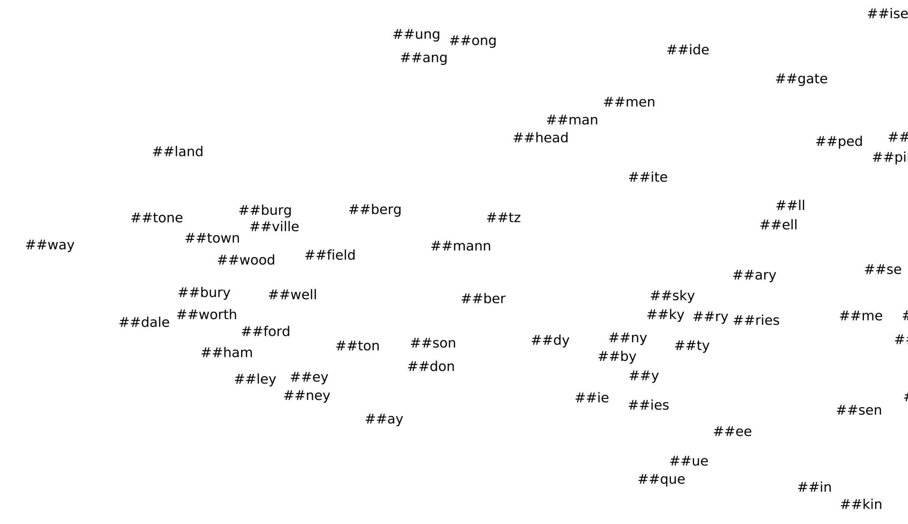
While most partial-word units are separated from the rest, some are mixed in with whole-word units:
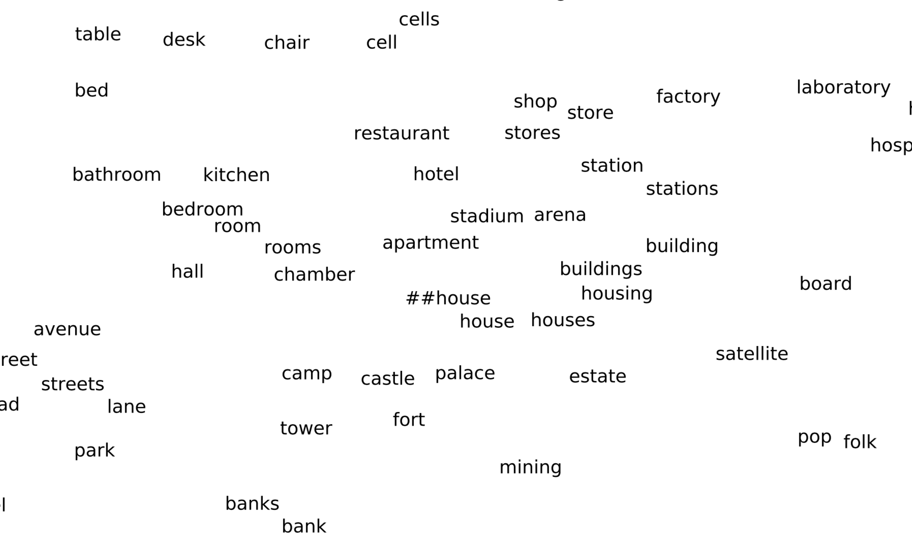
We can similarly visualize BERT's absolute position embeddings.
While the first and last positions are separated in the lower right, the others form a nearly-unbroken chain in ascending order from 1 to 510. Different runs of t-SNE can lead to different levels of cohesion in the chain, but the results are qualitatively similar.
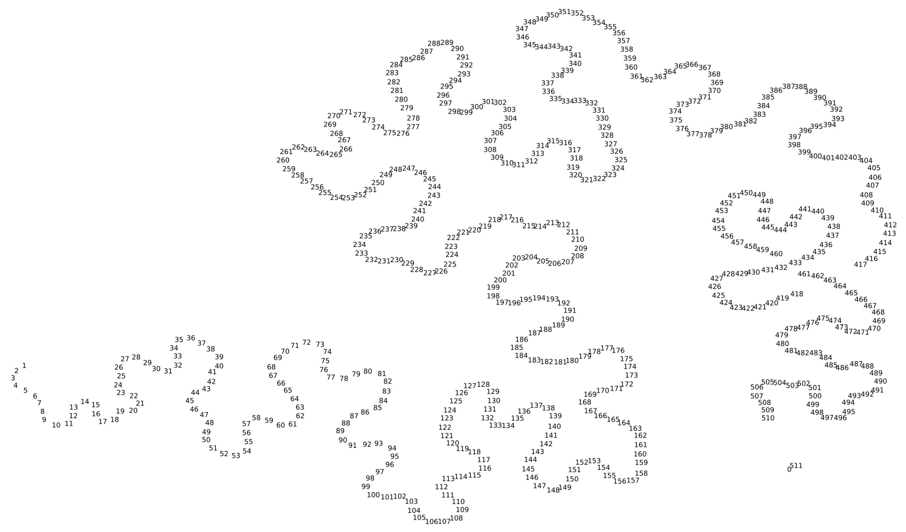
Next, we will use BERT to embed a word in its context and visualize the final layer for the position of the word of interest. We will consider the word
values. First, here's its location in the vocabulary embeddings:
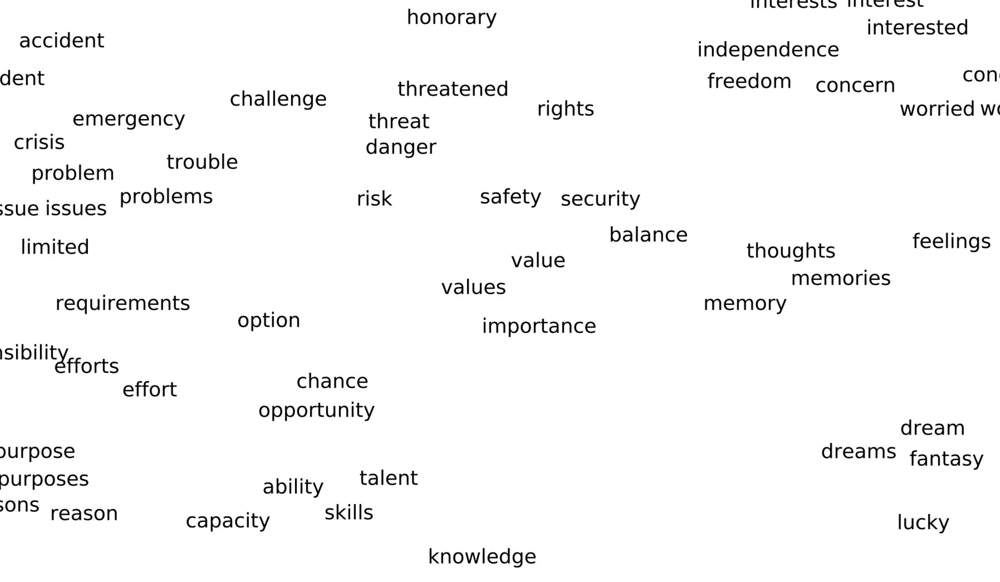
Now, we use BERT to embed 15,000 instances of
values in sentences drawn from Wikipedia and Project Gutenberg, then run t-SNE on the embeddings taken from the final layer. Below we plot 750 instances of
values along with their sentence contexts (up to 5 subword units to either side):
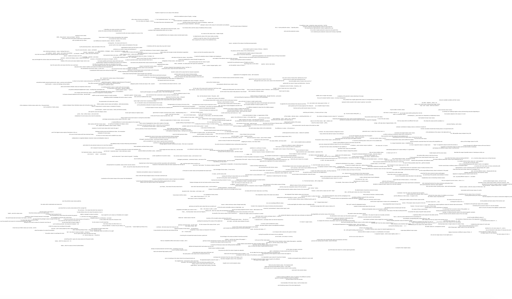
Zooming in, we find different senses of the word in different areas of the visualization. The cluster in the lower left corresponds to verbal uses:
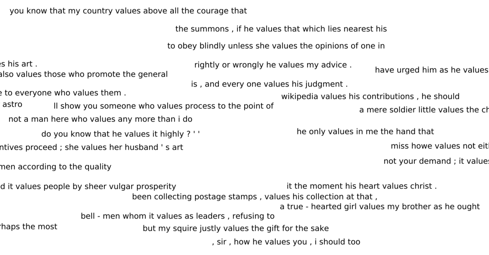
The remaining are mostly nominal uses. On the left are uses of the sense related to principles or standards:
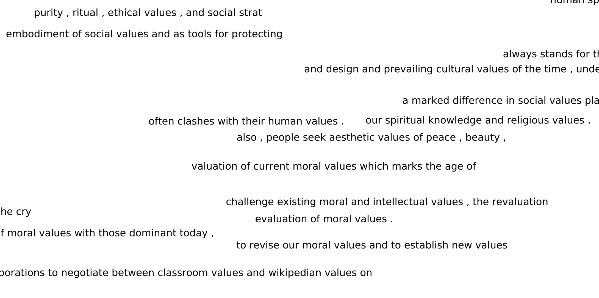
To the right we find scientific and mathematical uses; the following shows the lower right corner:
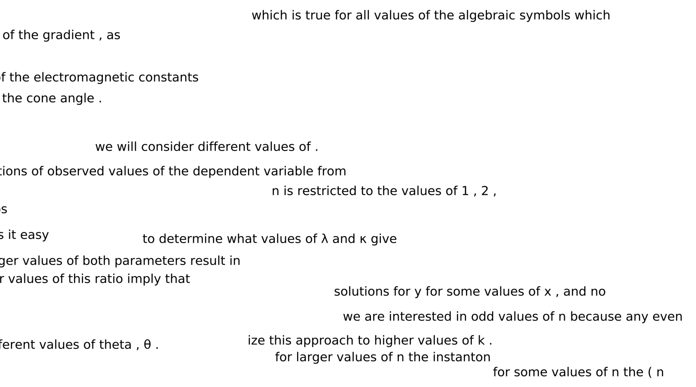
How about the small cluster in the top center that's separated from the rest? These correspond to the phrase
production values:
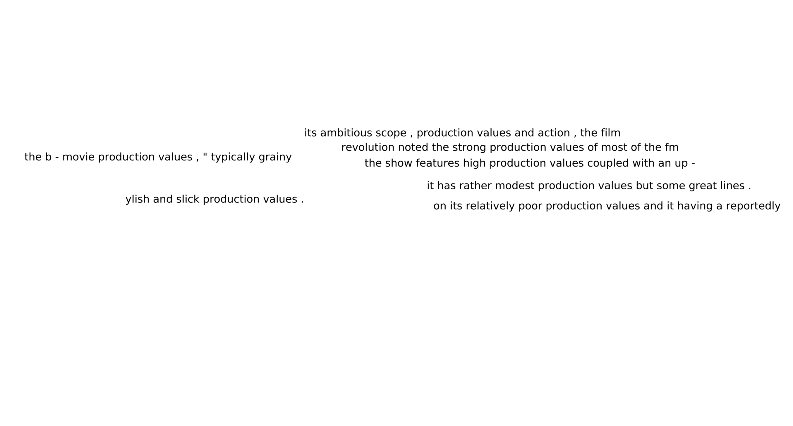
Please
contact me with issues, bug reports, etc.
Back to my teaching materials.